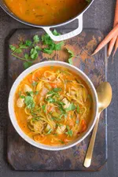
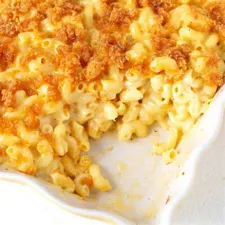

Korean BBQ Short Ribs

Korean-style short ribs can be found at most Asian markets. The cut, also known as "flanken," refers to a strip of beef cut across the bone from the chuck end of the short ribs.
Unlike American and European-style short ribs, which include a thick slice of bone-in beef, Korean-style short ribs are cut lengthwise across the rib bones.
The result is a thin strip of meat, about 8 to10 inches in length, lined on 1 side with 1/2-inch thick rib bones.
The thin slices make for fast cooking on the grill.
Ingredients
- 3/4 cup soy sauce
- 3/4 cup water
- 3 tablespoons ssesame oil
- 1/2 large onion, minced
- 1/4 cup minced garlic
- 1/4 cup dark brown sugar
- 2 tablespoons white sugar
- 1 tablespoon black pepper
- 3 Pounds Korean-style short ribs (beef chuck flanken, cut 1/3- to 1/2-inch-thick across bones)
- Pour soy sauce, water vinegar, and sesame oil into a large, non-metalic bowl. Whisk in
onion, garlic, brown sugar, white sugar and pepperm whisking until sugars dissolve.
Submerge ribs in the marinade. Cover the bowl and refrigerate for 7 to 12 hours; the
longer the better.
- Preheat an outdoor grill for medium high heat.
- Remove ribs from marinade and shake off excess; discard marinade.
- Cook on the preheated grill until the meat is no longer pin, 5 to 7 minutes per side.
- Serve and Enjoy!
Spicy Chicken Soup

Don’t let the name fool you, this soup isn’t overly “spicy,” at least not in the heat-your-mouth-up, Tabasco or hot sauce, kind of way. It simply has a lot of spices in it.
The spice level also really depends on what type of salsa you add to it (mild, medium, or hot) to determine how spicy it will be. For mild flavor,
add slightly less chili powder and choose a mild salsa.
It’s a great soup to make in advance as it tastes even better over time, and you can load it with your favorite Mexican-style toppings, like cilantro,
avocado, cotija cheese, and jalapeños.
Ingredients
- 1 tablespoon olive oil
- 1 cup chopped onion
- 1 cup diced green bell pepper
- 2 cloves garlic, pressed
- 2 (14.5 ounce) cans chicken broth
- 1 (10 ounce) can diced tomatoes with green chile peppers
- Heat olive oil in a large saucepan over medium heat.
- Saute onion, green pepper and garlic until tender. Stir in chicken broth, chicken pieces and diced tomatoes and chillies.
- Simmer covered for at least 10 minutes.
- Serve hot and enjoy!
Homemade Mac and Cheese

Mac and cheese is one of those recipes that can take on so many different forms.
I love it anyway I can get it but baked mac and cheese is my very favorite and I’ll tell you why… The topping.
I use breadcrumbs for my topping occasionally, but, a Panko topped mac and cheese is just that much better.
Ingredients
- 8 ounces uncooked elbow macaroni
- 1/4 cup butter
- 2 1/2 tablespoons all-purpose flour
- 3 cups milk
- 2 cups shredded sharp Cheddar cheese
- 1/2 cup grated Parmesan cheese
- 2 tablespoons butter
- 1/2 cup bread crumbs
- 1 pinch paprika
- Preheat the oven to 350 degrees F (175 degrees C).
- Cook macaroni according to the package directions. Drain.
- Melt butter in a medium skillet over low heat. Gradually add flour, whisking until well combined. Slowly
pour in milk, whisking constantly until smooth. Stir in cheeses, and cook over low heat until cheese is melted
and cook over low heat until cheese is melted and the sauce is a litlle thick. Put macaroni in large casserole dish, and
pour sauce over macaroni. Stir well.
- Melt butter in a skillet in over medium heat. Add breadcrumbs and brown. Spread over the macaroni and cheese to cover.
Sprinkle with a little paprika.
- Bake in the preheated oven for 30 minutes. Serve.